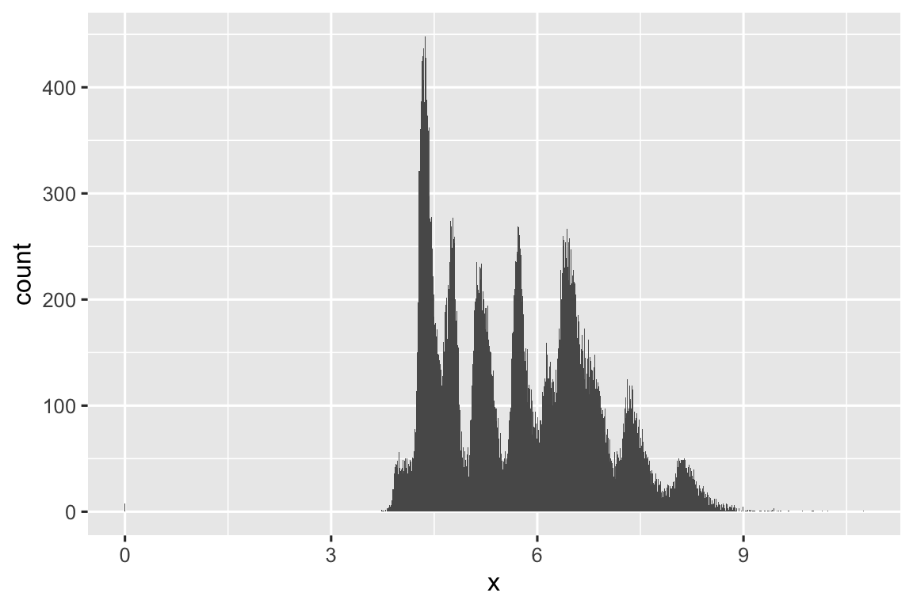
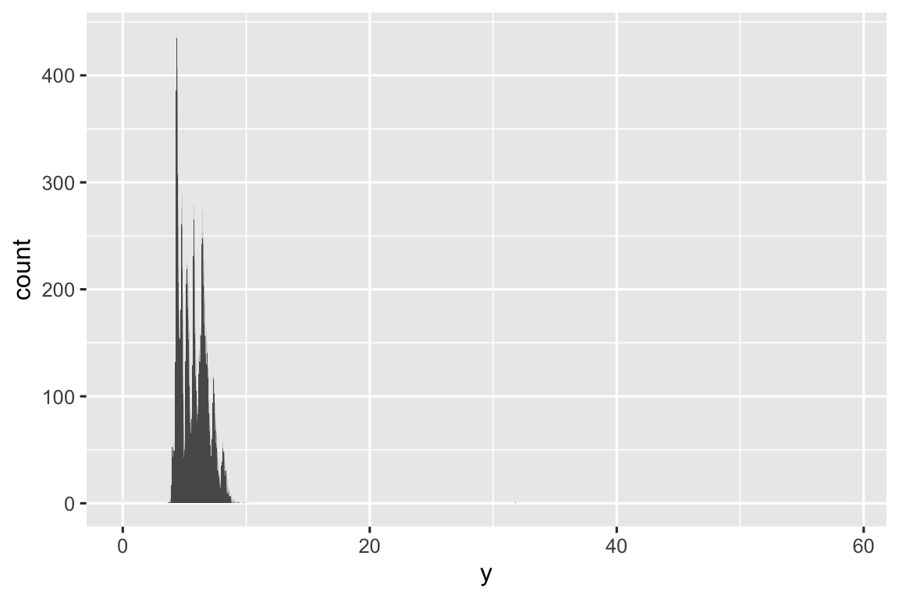
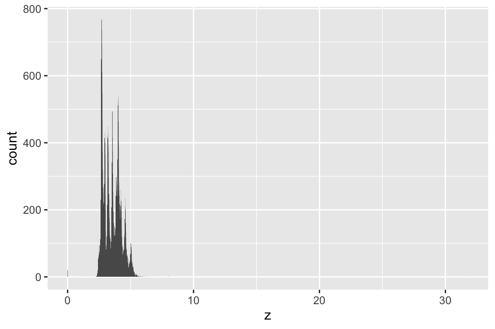
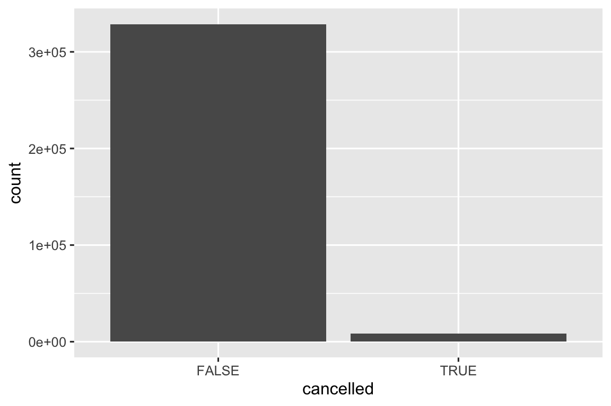
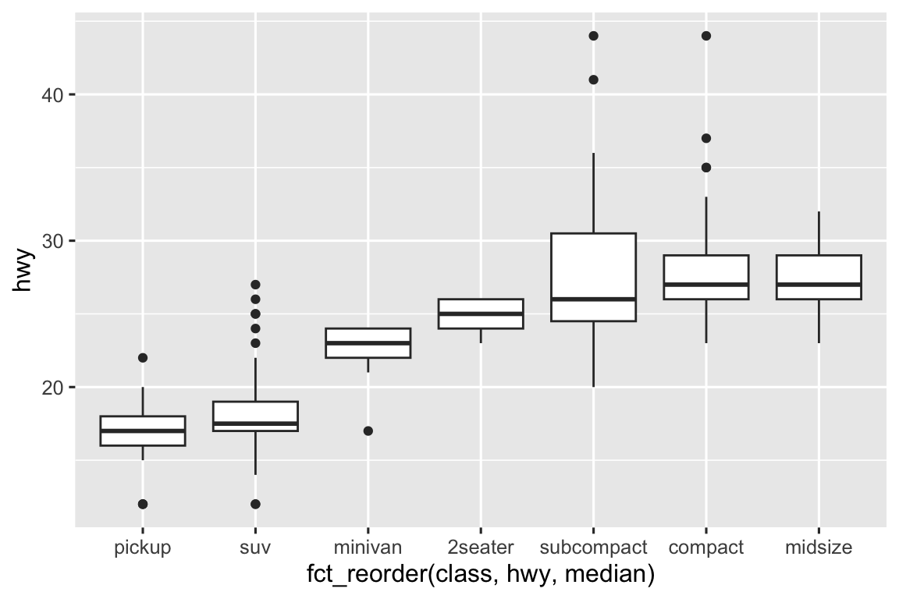
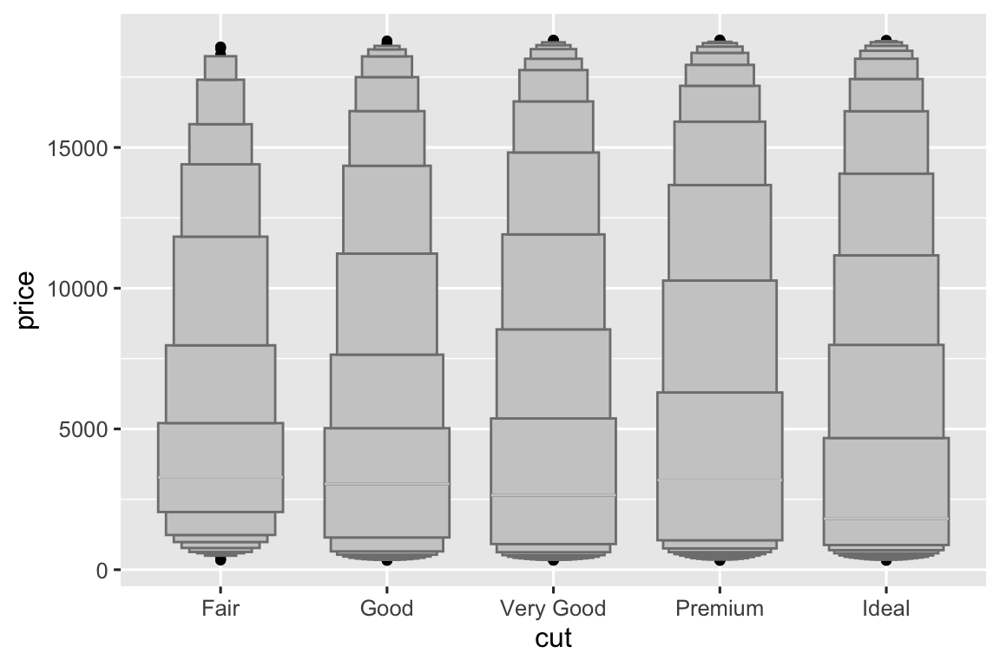
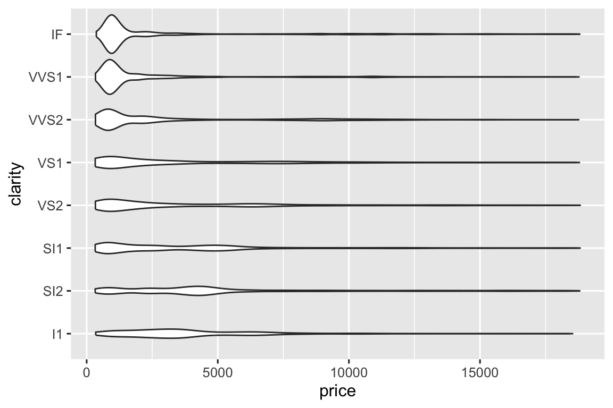
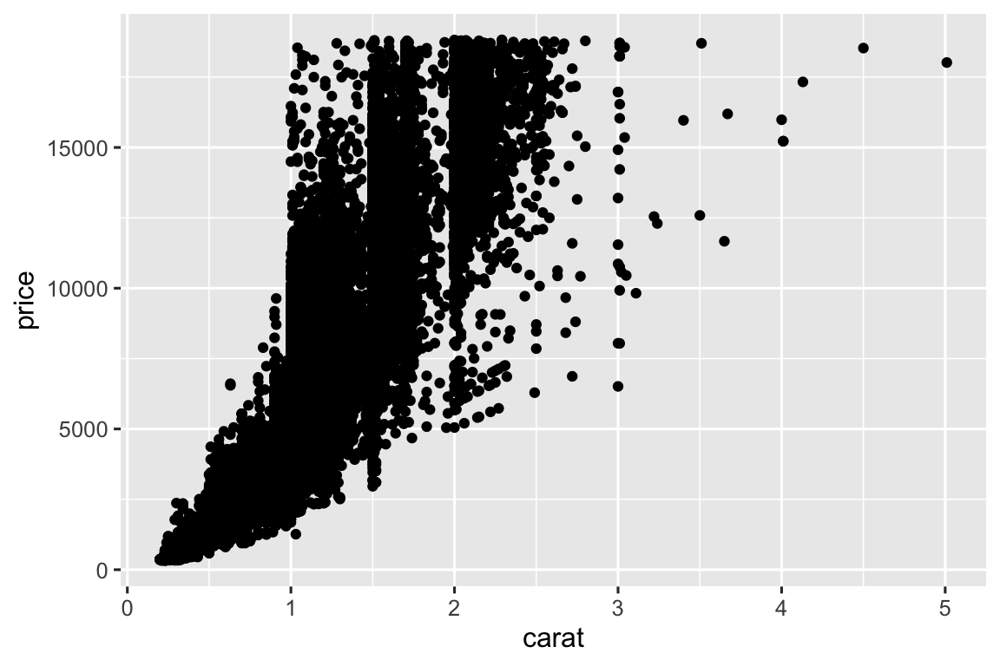
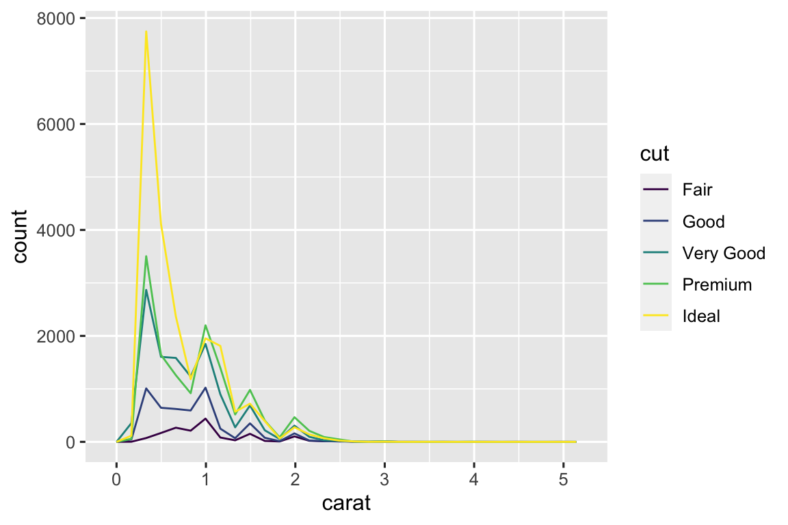
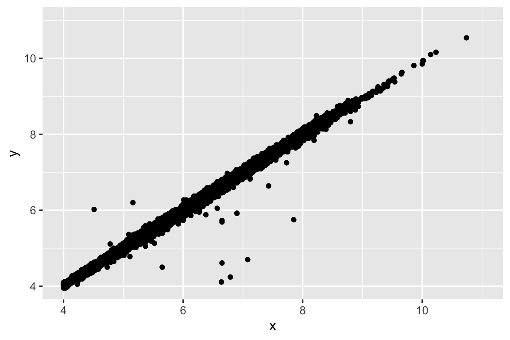

library(tidyverse)
#> ── Attaching core tidyverse packages ───────────────────── tidyverse 2.0.0 ──
#> ✔ dplyr 1.1.2 ✔ readr 2.1.4
#> ✔ forcats 1.0.0 ✔ stringr 1.5.0
#> ✔ ggplot2 3.4.2 ✔ tibble 3.2.1
#> ✔ lubridate 1.9.2 ✔ tidyr 1.3.0
#> ✔ purrr 1.0.1
#> ── Conflicts ─────────────────────────────────────── tidyverse_conflicts() ──
#> ✖ dplyr::filter() masks stats::filter()
#> ✖ dplyr::lag() masks stats::lag()
#> ℹ Use the conflicted package (<http://conflicted.r-lib.org/>) to force all conflicts to become errors
library(ggbeeswarm)
library(lvplot)Exploratory data analysis
Prerequisites
11.3.3 Exercises
All distributions are multimodal, right skewed, and have extreme outliers.
ggplot(diamonds, aes(x = x)) + geom_histogram(binwidth = 0.01) ggplot(diamonds, aes(x = y)) + geom_histogram(binwidth = 0.01) ggplot(diamonds, aes(x = z)) + geom_histogram(binwidth = 0.01)


Typical values for
xandyare larger thanz, which might suggestzis the depth, which matches up with the documentation. Typical values forxandyare ver similar, but the maximum foryis much higher, therefore I would guess thatyis width, since we generally expect width to be larger than length.diamonds |> select(x, y, z) |> pivot_longer(cols = everything(), names_to = "measurement") |> group_by(measurement) |> summarize( min = min(value), mean = mean(value), median = median(value), sd = sd(value), iqr = IQR(value), max = max(value) ) #> # A tibble: 3 × 7 #> measurement min mean median sd iqr max #> <chr> <dbl> <dbl> <dbl> <dbl> <dbl> <dbl> #> 1 x 0 5.73 5.7 1.12 1.83 10.7 #> 2 y 0 5.73 5.71 1.14 1.82 58.9 #> 3 z 0 3.54 3.53 0.706 1.13 31.8
The distribution of price is right skewed with a median of $2,401. There is a gap in the distribution with very few diamonds around $1,500, which is curious – I can’t think of a specific reason why that would be the case.
ggplot(diamonds, aes(x = price)) + geom_histogram(binwidth = 100) + scale_x_continuous(breaks = seq(0, 20000, 2000))
diamonds |> summarize( min = min(price), mean = mean(price), median = median(price), sd = sd(price), iqr = IQR(price), max = max(price) ) #> # A tibble: 1 × 6 #> min mean median sd iqr max #> <int> <dbl> <dbl> <dbl> <dbl> <int> #> 1 326 3933. 2401 3989. 4374. 18823
Only 23 diamonds are 0.99 carats and 1,558 diamonds are 1 carat. This is likely because the market for 0.99 carat diamonds is small. If you can get a 1 carat diamond for just a little but of increase in price. We can see that the typical price for a 1 carat diamond is less than $100 more than the typical price for a 0.99 carat diamond. For that small a difference, compared to the actual price of a diamond, many people might be willing to go up to a full carat.
diamonds |> filter(carat %in% c(0.99, 1)) |> group_by(carat) |> summarize( n = n(), median_price = median(price) ) #> # A tibble: 2 × 3 #> carat n median_price #> <dbl> <int> <dbl> #> 1 0.99 23 4780 #> 2 1 1558 4864Specifying
xlim()filters out any observations not in the specified range while specifying thexlimargument incoord_cartesian()zooms into the original plot without filtering.ggplot(diamonds, aes(x = price)) + geom_histogram(binwidth = 500) ggplot(diamonds, aes(x = price)) + geom_histogram(binwidth = 500) + xlim(0, 5000) #> Warning: Removed 14714 rows containing non-finite values (`stat_bin()`). #> Warning: Removed 2 rows containing missing values (`geom_bar()`). ggplot(diamonds, aes(x = price)) + geom_histogram(binwidth = 500) + coord_cartesian(xlim = c(0, 5000))


This is similar for specifying limits for
yas well.ggplot(diamonds, aes(x = price)) + geom_histogram(binwidth = 500) ggplot(diamonds, aes(x = price)) + geom_histogram(binwidth = 500) + ylim(0, 1000) #> Warning: Removed 13 rows containing missing values (`geom_bar()`). ggplot(diamonds, aes(x = price)) + geom_histogram(binwidth = 500) + coord_cartesian(ylim = c(0, 1000))


- It looks like when you use the
xlimit zooms out but when you use theylimit zooms in.
ggplot(diamonds, aes(x = carat)) + geom_histogram(binwidth = .1) +
coord_cartesian(xlim = c(0,50))
ggplot(diamonds, aes(x = carat)) + geom_histogram(binwidth = .1) +
coord_cartesian(ylim = c(0,50))

11.4.1 Exercises
The missing values are removed with a warning.
For mean it determines whether na’s should be removed or not and for sum should na values be removed and certain other values.
11.5.1.1 Exercises
canceled_flights <- nycflights13::flights |>
mutate(
cancelled = is.na(dep_time),
sched_hour = sched_dep_time %/% 100,
sched_min = sched_dep_time %% 100,
sched_dep_time = sched_hour + (sched_min / 60)
)
ggplot(canceled_flights,aes(x = cancelled)) +
geom_bar()
2.I would say maybe clarity or just straight up price,because the lower quality diamonds correspond to people buying them who don’t really know about diamonds or don’t care about the quality,theres alot more lower quality diamonds than higher quality.
?diamonds
- It switching the x and y its alot faster.
ggplot(mpg, aes(x = hwy, y = fct_reorder(class, hwy, median))) +
geom_boxplot() + coord_flip()
4.One problem with boxplots is that they were developed in an era of much smaller datasets and tend to display a prohibitively large number of “outlying values”. One approach to remedy this problem is the letter value plot. Install the lvplot package, and try using geom_lv() to display the distribution of price vs. cut. What do you learn? How do you interpret the plots?
ggplot(diamonds,aes(x = cut,y = price)) +
geom_lv()
- geom_violin shows a basic understanding of the amount of diamonds while geom_histogram shows the further outliers better and where they are and geom_freqpoly shows the count better
ggplot(diamonds,aes(x = price, y = clarity)) +
geom_violin()
ggplot(diamonds,aes(x = price)) +
geom_histogram() +
facet_wrap(~clarity, ncol = 1, scales = "free_y")
#> `stat_bin()` using `bins = 30`. Pick better value with `binwidth`.
#> `stat_bin()` using `bins = 30`. Pick better value with `binwidth`
ggplot(diamonds,aes(x = price, color = clarity)) +
geom_freqpoly()
#> `stat_bin()` using `bins = 30`. Pick better value with `binwidth`.
#> `stat_bin()` using `bins = 30`. Pick better value with `binwidth`.
geom_beeswarm()makes it so you have more control over overplotting datasets, while geom_jitter to me seems like just a default that you can use on the go but if you do want more customization ggbeeswarm is better for handling overplotting.
11.5.2.1 Exercises
ggplot(diamonds, aes(x = cut, y = color)) +
geom_count()
count(diamonds,color,cut)
#> # A tibble: 35 × 3
#> color cut n
#> <ord> <ord> <int>
#> 1 D Fair 163
#> 2 D Good 662
#> 3 D Very Good 1513
#> 4 D Premium 1603
#> 5 D Ideal 2834
#> 6 E Fair 224
#> # ℹ 29 more rows
ggplot(diamonds,aes( x = color, fill = cut)) +
geom_bar(position = "fill")
nycflights13::flights |>
summarise(dest,month,year) |>
group_by(dest,month)
#> Warning: Returning more (or less) than 1 row per `summarise()` group was deprecated
#> in dplyr 1.1.0.
#> ℹ Please use `reframe()` instead.
#> ℹ When switching from `summarise()` to `reframe()`, remember that
#> `reframe()` always returns an ungrouped data frame and adjust accordingly.
#> # A tibble: 336,776 × 3
#> # Groups: dest, month [1,113]
#> dest month year
#> <chr> <int> <int>
#> 1 IAH 1 2013
#> 2 IAH 1 2013
#> 3 MIA 1 2013
#> 4 BQN 1 2013
#> 5 ATL 1 2013
#> 6 ORD 1 2013
#> # ℹ 336,770 more rows11.5.3.1 Exercises
smaller <- diamonds |>
filter(carat < 3)- If you want to use cut_width know you r datas values,if you use cut_number know your sample size.
# visualize price binning by carat, cut_width()
ggplot(smaller, aes(x = price, y = ..density..,)) +
geom_freqpoly(aes(color = cut_width(carat, 0.5)))
#> Warning: The dot-dot notation (`..density..`) was deprecated in ggplot2 3.4.0.
#> ℹ Please use `after_stat(density)` instead.
#> `stat_bin()` using `bins = 30`. Pick better value with `binwidth`.
# visualize price binning by carat, cut_number(), 10 bins
ggplot(smaller, aes(x = price, y = ..density..,)) +
geom_freqpoly(aes(color = cut_number(carat, 10)))
#> `stat_bin()` using `bins = 30`. Pick better value with `binwidth`.

2.Visualize the distribution of carat, partitioned by price.
ggplot(diamonds, aes(x = price, y = carat)) +
geom_boxplot()
#> Warning: Continuous x aesthetic
#> ℹ did you forget `aes(group = ...)`?
- Its not what i expect even the large diamonds are the same price as smaller diamonds.
ggplot(diamonds,aes(x = carat, y = price)) +
geom_point()
ggplot(diamonds,aes(x = price, color = cut, fill = cut)) +
geom_freqpoly()
#> `stat_bin()` using `bins = 30`. Pick better value with `binwidth`.
ggplot(diamonds,aes(x = carat, color = cut, fill = cut)) +
geom_freqpoly()
#> `stat_bin()` using `bins = 30`. Pick better value with `binwidth`.
- This scatterplot shows outliers and binned plots don’t.
diamonds |>
filter(x >= 4) |>
ggplot(aes(x = x, y = y)) +
geom_point() +
coord_cartesian(xlim = c(4, 11), ylim = c(4, 11))
diamonds |>
filter(x >= 4) |>
ggplot(aes(x = x)) +
geom_histogram()
#> `stat_bin()` using `bins = 30`. Pick better value with `binwidth`.
- If you want to control the width you use cut_width, if you want to choose the number of bins use cut_number.
ggplot(smaller, aes(x = carat, y = price)) +
geom_boxplot(aes(group = cut_number(carat, 20)))
smaller |>
mutate(carat_group = cut_number(carat,20)) |>
count(carat_group)
#> # A tibble: 20 × 2
#> carat_group n
#> <fct> <int>
#> 1 [0.2,0.3] 4203
#> 2 (0.3,0.31] 2249
#> 3 (0.31,0.32] 1840
#> 4 (0.32,0.35] 2766
#> 5 (0.35,0.4] 3333
#> 6 (0.4,0.42] 2088
#> # ℹ 14 more rows
ggplot(smaller, aes(x = carat, y = price)) +
geom_boxplot(aes(group = cut_width(carat, .1)))
smaller |>
mutate(carat_group = cut_width(carat,.1)) |>
count(carat_group)
#> # A tibble: 27 × 2
#> carat_group n
#> <fct> <int>
#> 1 [0.15,0.25] 785
#> 2 (0.25,0.35] 10273
#> 3 (0.35,0.45] 6231
#> 4 (0.45,0.55] 5417
#> 5 (0.55,0.65] 2328
#> 6 (0.65,0.75] 5249
#> # ℹ 21 more rows